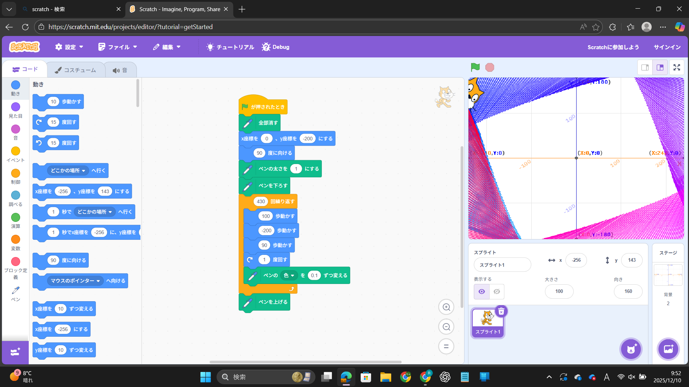
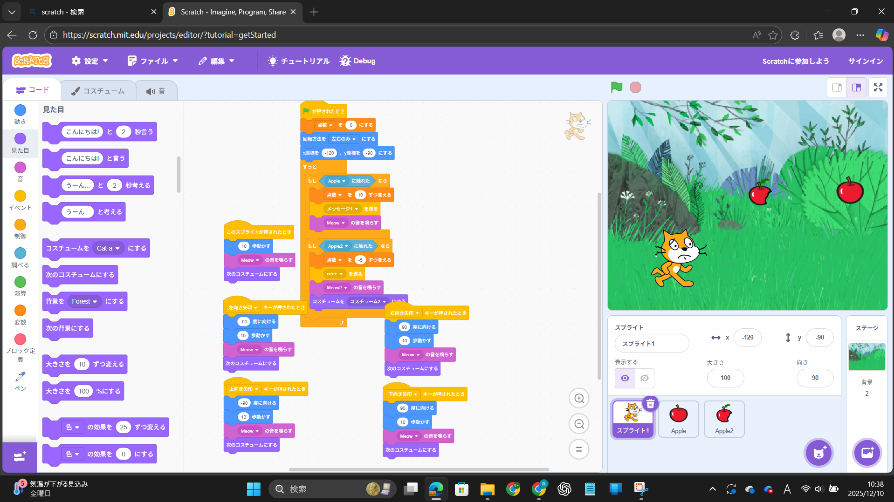

1週目のレポート ： 公大高専１年実習I-1
2b班22番 あーさん
第1週目
1-1 サイエンスアート

1.内容
Sratchを用いてサイエンスアートを行った。配布された資料をみてscratchにプログラムを書き込んでいった。
プログラムはアートという名のように色を指定して、猫に描かせることにした。
2.感想
プログラム内の数値をちょっと変えるだけでも大きく変化することがあったため驚いた。
どのように変化するのか観察してアートを作る作業が楽しかった。
1-2 ゲーム

1.内容
サイエンスアートと同じく、scratchを用いてゲームを作った。配布された資料を参考にして、
猫がりんごをキャッチするゲームを作った。
2.感想
虫食いりんごをキャッチすると、点数が下がる要素を追加させてみた。新しい要素を追加させるのは
少し難しかったが、試行錯誤をしてプログラムするのは楽しかった。
1-3 ホームページ作成
私のホームページ
1.内容
テンプレートをフォークして、内容を自分で変更し自分オリジナルのホームページを作った。
タイトル、自己紹介、作成日を自分なりに変更した。
2.感想
コードを見て自分なりに変更していく作業はプログラミングをしている感覚に陥り、楽しみを覚えた。
これらがもう公開されていることはインターネットのすごいところだと思った。
各ページへのリンク
1週目のレポート
2週目のレポート
3週目のレポート
私のホームページ